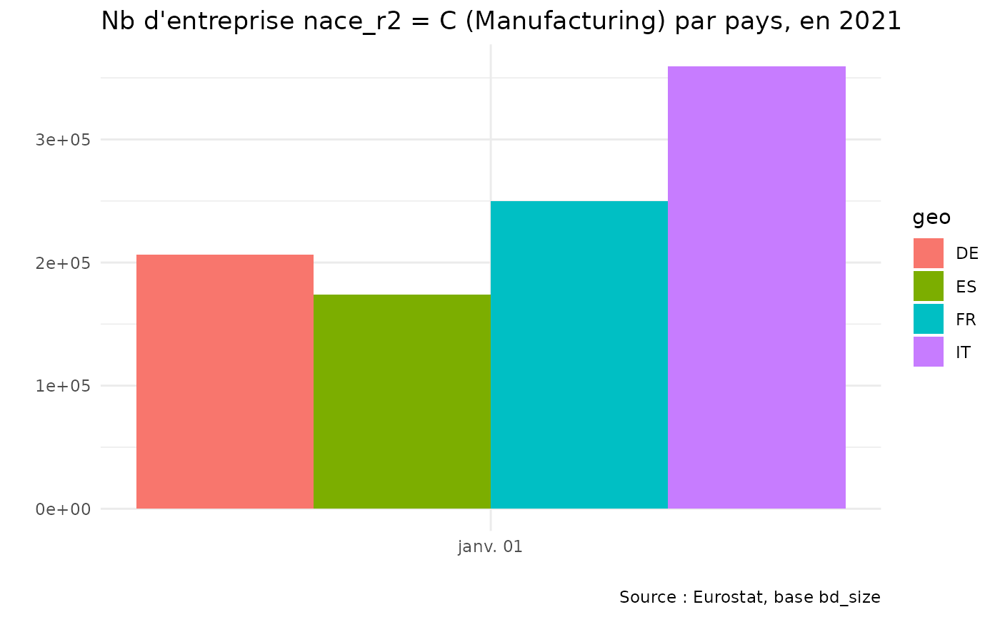

library("eurostat")
tocestat <- eurostat::get_eurostat_toc(lang = "fr")
tocestat |>
DT::datatable()#> Warning in instance$preRenderHook(instance): It seems your data is too big for
#> client-side DataTables. You may consider server-side processing:
#> https://rstudio.github.io/DT/server.html
entdataset <-
eurostat::search_eurostat(pattern = "entreprises",
column = "title",
lang = "fr")
entdataset |>
DT::datatable()
demoentr <-
eurostat::get_eurostat(
"bd_size",
filters = list(geo = c("EU27_2020", "FR", "IT", "DE", "ES"),
indic_sbs = "ENT_NR",
nace_r2 = "C",
sizeclas = "TOTAL"),
time_period = "2021",
time_format = "date")
#> Table bd_size cached at /tmp/RtmpwK89gk/eurostat/9e9d8d744aafac249e26c2114172f62d.rds
demoentrlab <-
demoentr |>
eurostat::label_eurostat(lang = "fr")
demoentrlab |>
DT::datatable()
library("ggplot2")
demoentr |>
dplyr::filter(time == "2021-01-01",
age == "TOTAL",
geo != "EU27_2020") |>
ggplot(aes(x = time, y = values, fill = geo)) +
geom_bar(stat = "identity", position = "dodge") +
labs(x = "", y = "",
caption = "Source : Eurostat, base bd_size",
title = "Nb d'entreprise nace_r2 = C (Manufacturing) par pays, en 2021") +
theme_minimal()
